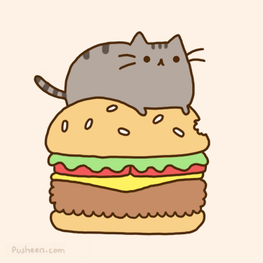

April 4
The homepage of project 1 is responsive.
March 26
Check the games page in project 1 for the image gallery!
Welcome!
Neato thing - I already have a float and a position included in my css file. The header is position fixed, and various things are floated.
Project 1!
We're getting closer to a pretty website. Slowly, but surely.
Locations of things for homework 4:
- Go to the assignments page. The table is there.
Locations of things for homework 3:
- The header has 2 images
- The chrome tab has an image
- In case those aren't good enough, here's a picture of my favorite cat!

Also, the styles are: the font style is New Times Roman, this is in pretty purple, and then there's a whole style sheet attached!
Locations of things for homework 2:
- The contacts page has an unordered list.
- You're looking at the ordered list!
- Lists are easy when all you write in is Markdown
- The contact page has an email link.
- The nav-bar option of Personal sends you to an absolute link (my personal website)
- The nav-var option of Contacts and Home are relative links.